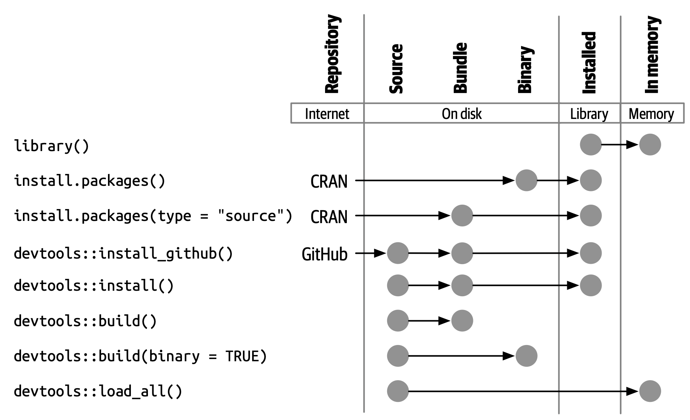

3 Package structure and state
本章将通过把您从使用 R 包中获得的隐性知识转换为创建和修改它们所需的显式知识，从而开始开发程序包。 您将了解程序包（package）的各种状态，以及它和库（library）之间的区别（以及为什么要关心二者的区别）。
3.1 Package states
当你创建或修改一个包时，需要在它的源代码（“source code”）或源文件（“source files”）上进行。 您能够以源代码（source）的形式与正在开发的程序包进行交互。 这不是您在日常使用中最熟悉的包形式。 如果您了解 R 程序包可能处于的五种状态，那么程序包开发的工作流将变得更有意义：
- 源代码（source）
- 捆绑的（bundled）
- 二进制文件（binary）
- 已安装的（installed）
- 载入内存中的（in-memory）
您已经知道一些将程序包转入这些状态的函数。 例如，install.packages() 可以将包从源码（source）、捆绑（bundled）或二进制（binary）状态移动到已安装（installed）状态。 devtools::install_github() 获取 GitHub 上的源码（source）包并将其移至已安装（installed）状态。 library() 函数的作用是：将已安装的程序包加载到内存中，以便可以马上直接使用。
3.2 Source package
一个源码（source）程序包就是一个有着特定结构的文件目录。 它包含特定的组件，例如一个 DESCRIPTION 文件、包含 .R 文件的 R/ 目录等。 本书余下的大部分章节都致力于详细说明这些组成部分。
如果您刚刚接触 R 程序包的开发，那么您可能从未见过源码（source）形式的程序包！ 您的计算机上可能甚至没有任何源码程序包。 以源码形式查看程序包的最简单的方法是在 web 上浏览其代码。
许多 R 程序包是在 GitHub（或者 GitLab 以及类似的平台）上的公开库中开发的。 最好的方案是访问程序包的 CRAN 主页，例如：
- forcats: https://cran.r-project.org/package=forcats
- readxl: https://cran.r-project.org/package=readxl
并且其中一个网页链接（URLs）链接到公共托管服务上的存储库（repository），例如：
- forcats: https://github.com/tidyverse/forcats
- readxl: https://github.com/tidyverse/readxl
即使程序包是在公共存储库中开发的，一些维护人员还是忘记了列出这个网页链接（URL），但是您仍然可以通过搜索来发现它。
即使程序包不是在公共平台上开发的，也可以在 unofficial, read-only mirror maintained by R-hub 中访问其源代码。 示例：
请注意，在 cran GitHub 组织内探索包的源码和历史记录与探索包的真正开发场所不同，因为此源码及其演变只是从包的 CRAN 版本进行逆向工程。 它提供了对程序包及其开发历史的审查视图，但根据定义，源代码及其历史包含了所有程序包开发的必需的内容。
3.3 Bundled package
捆绑的（bundled）程序包是被压缩成单个文件的程序包。 按照惯例（该惯例来自 Linux），R 中的捆绑程序包使用 .tar.gz 扩展名，并且有时被称为源码压缩包（“source tarballs”）。 这意味着多个文件已经被打包为一个文件（.tar）并使用 gzip（.gz）进行压缩。 虽然捆绑程序包本身并不那么有用，但它是源码包和已安装包之间平台无关的、便于传输的中间媒介。
在从本地开发的程序包中生成捆绑程序包这种罕见的情况下，请使用 devtools::build()。 在幕后，它会调用 pkgbuild::build() 并最终调用 R CMD build，这些会在 Writing R Extensions 的 Building package tarballs 部分中进一步阐述。
这应该会提醒您，捆绑程序包或源码压缩包不仅仅是对源文件进行 tar 打包存档，然后使用 gzip 压缩的结果。 按照惯例，在 R 世界中，在制作 .tar.gz 文件时还要执行一些操作。 这就是我们选择将其称为捆绑（bundle）程序包的原因。
每个 CRAN 包都可以通过其登陆页面的 “Package source” 字段以捆绑（bundled）形式提供。 继续我们上面的示例，您可以下载 forcats_0.4.0.tar.gz 和 readxl_1.3.1.tar.gz 的捆绑包（或者任何当前的版本）。 您可以在 shell（而不是 R 控制台）中进行解压缩：
tar xvf forcats_0.4.0.tar.gz如果您解压缩一个捆绑包，您将看到它看起来几乎与源码包相同。 Figure 3.1 显示了名为 zzzpackage 的虚构包的源码（source）、捆绑（bundled）、二进制（binary）形式的文件。 我们特意制作了这个示例，以包含本书中涵盖的大部分包部分。 并非每个包都包含此处看到的每个文件，此图也不包含可能出现在包中的每个可能文件。

源码（source）包和未压缩的捆绑（bundle）包之间的主要区别为：
已经生成了 Vignettes，因此以已渲染的输出（如 HTML）出现在
inst/doc/目录下，并且 Vignette 索引出现在build/目录中。本地源码包可能包含用于在开发期间节省时间的临时文件，如
src/中的编译文件。 这些文件从来没有在捆绑包中找到过。.Rbuildignore中列出的任何文件都不包含在捆绑包中。 这些文件通常有助于您的开发过程，但应该从分发式的产品中排除。
3.3.1 .Rbuildignore
您不需要非常频繁地考虑 .tar.gz 文件形式的程序包的确切结构，但您确实需要了解 .Rbuildignore 文件。 它决定了源码包中的哪些文件可以进入后面的工作流。
.Rbuildignore 的每一行都是与 Perl 兼容的正则表达式，不考虑大小写，它与源码包中每个文件的路径匹配1。 如果与正则表达式匹配，则排除该文件或目录。 注意，有一些默认排除项由 R 本身执行，主要与经典的版本控制系统和编辑器（如 SVN、Git 和 Emacs）有关。
我们通常使用 usethis::use_build_ignore() 函数修改 .Rbuildignore，它负责处理容易忘记的细节，例如正则表达式锚定和转义。 要排除特定文件或目录（最常见的使用示例），您必须锚定（anchor）正则表达式。 例如，要排除名为 “notes” 的目录，.Rbuildignore 条目必须是 ^notes$，而未锚定的正则表达式 notes 将匹配任何包含 “notes” 的文件名，例如 R/notes.R、man/important-notes.R、data/endnotes.Rdata 等。 我们发现 use_build_ignore() 可以帮助我们一次性获得更多的 .Rbuildignore 条目。
.Rbuildignore 是解决让您更便利地开发的操作与 CRAN 提交和分发的要求之间一些紧张关系的一种方法 (Chapter 22)。 即使您不打算在 CRAN 上发布，遵循这些约定能让您最好地使用 R 的内置工具来检查和安装程序包。 你应该 .Rbuildignore 的文件分为两个广泛的、半重叠的类别：
- 帮助您以编程方式生成程序包内容的文件。例如：
- 使用
README.Rmd生成信息丰富的最新README.md（Section 18.1）。 - 存储
.R脚本以创建和更新内部或导出数据（Section 7.1.1）。
- 使用
- 驱动程序包开发、检查和产生文档的文件，不在 CRAN 的范围内。例如：
- 与 RStudio IDE 相关的文件（Section 4.2）。
- 使用 pkgdown package 生成网站（Chapter 19）。
- 与持续集成/部署相关的配置文件（Section 20.2）。
以下是 tidyverse 中程序包的 .Rbuildignore 文件中典型条目的非完整列表：
^.*\.Rproj$ # Designates the directory as an RStudio Project
^\.Rproj\.user$ # Used by RStudio for temporary files
^README\.Rmd$ # An Rmd file used to generate README.md
^LICENSE\.md$ # Full text of the license
^cran-comments\.md$ # Comments for CRAN submission
^data-raw$ # Code used to create data included in the package
^pkgdown$ # Resources used for the package website
^_pkgdown\.yml$ # Configuration info for the package website
^\.github$ # GitHub Actions workflows请注意，上面的注释不能出现在实际的 .Rbuildignore 文件中；此处包含这些注释只是为了演示。
我们会在需要的时候提到何时需要向 .Rbuildignore 中添加排除项。 请记住 usethis::use_build_ignore() 是管理此文件的一种有吸引力的方法。 此外，许多使用此功能添加应在 .Rbuildignore 中列出的文件会自动处理此问题。 例如，use_read_rmd() 将 “^README\.Rmd$” 添加到 .Rbuildignore。
3.4 Binary package
如果要将程序包分发给没有程序包开发工具的 R 用户，则需要提供二进制（binary）包。 二进制包的主要制造者和分发者是 CRAN，而不是个人维护者。 但是，即使您将分发包的责任委托给 CRAN，维护者了解二进制包的性质仍然很重要。
与捆绑包一样，二进制包是单个文件。 与捆绑包不同，二进制包是特定于平台的，有两种基本风格：Windows 和 macOS。 （Linux 用户通常需要拥有从 .tar.gz 文件安装所需的工具，尽管像 Posit Public Package Manager 这样的资源的出现让 Linux 用户可以像他们在 Windows 和 macOS 上的同事一样访问二进制包。）
macOS 的二进制包存储为 .tgz，而 Windows 二进制包以 .zip 结尾。 如果需要制作二进制包，请在相关操作系统上使用 devtools::build(binary = TRUE)。 在幕后，这会调用 pkgbuild::build(binary = TRUE) 并最终调用 R CMD INSTALL --build，这在 Writing R Extensions 的 Building binary packages 部分中有进一步描述。 如果你选择在 CRAN 上发布你的包（Chapter 22），你以捆绑形式提交你的包，然后 CRAN 创建并分发包二进制文件。
不论是 macOS 或 Windows，还是 R 的当前、先前和（可能的）开发版本，CRAN 通常都能以二进制包形式提供。 继续我们上面的例子，您能够下载二进制包，例如：
- forcats for macOS:
forcats_0.4.0.tgz - readxl for Windows:
readxl_1.3.1.zip
事实上，这是您在调用 isntall.packages() 时通常进行的部分幕后操作。
如果解压缩二进制包，您将看到它的内部结构与源码包或捆绑包有很大不同。 Figure 3.1 包含了二者的比较。 以下是一些最显著的区别：
在
R/目录中没有.R文件，而是有三个文件以有效的文件格式存储着解析的函数。 这基本上是加载所有 R 代码，然后用save()保存函数的结果。 （在这个过程中，这会添加一些额外的 metadata，使得过程尽可能地快）。Meta/目录中包含许多.rds文件。 这些文件包含有关包的缓存 metadata，如帮助文件所涵盖的主题和DESCRIPTION文件的解析版本。 （您可以使用readRDS()查看这些文件中的内容）。 这些文件通过缓存代价高昂的计算使程序包更快地加载。实际的帮助内容出现在
help/和html/（不再出现在man/）中。如果
src/目录中有任何代码，那么现在将有一个libs/目录，其中包含经过编译的代码。如果
data/中有任何对象，则它们现在已转换为更具效率的形式。inst/的内容被移动到顶层目录。 例如，vignette 文件现在位于doc/中。一些文件和文件夹已被删除，如
README.md、build/、tests/和vignettes/。
3.5 Installed package
已安装的（installed）包是已解压缩到程序包库中的二进制包（described in Section 3.7）。 Figure 3.2 说明了安装程序包的多种方法，以及将软件包从一种状态转换为另一种状态的一些其他函数。 这个图表很复杂！在理想情况下，安装包需要将一组简单的步骤串在一起：source -> bundle, bundle -> binary, binary -> installed。 在现实世界中，这个过程并不是这么简单，因为通常有（更快的）快捷方式可用。

内置命令行工具 R CMD INSTALL 支持所有程序包的安装。 它可以从源码文件、捆绑包、或二进制包安装程序包。 有关详细信息，请参阅 R Installation and Administration 的 Installing packages 部分。 与 devtools::build() 一样，devtools 提供了一个包装函数 devtools::install()，使该工具在 R 会话（R Session）中可用。
RStudio 可以帮助您安装开发中的包，通过 Build 窗格中的 Install 和 More 下拉菜单以及 Build 菜单中的 Install Package。
可以理解，大多数用户喜欢 R 会话（R Session）的舒适性，因此直接从 CRAN 安装软件包。 内置函数 install.packages() 满足了这一需要。 它可以以各种形式下载程序包并安装它，还可以选择程序包依赖项的安装。
然而，从 R 会话中安装 R 包的便利性是有代价的。 如您所料，重新安装已在当前会话中使用的包可能有点棘手。 这实际上大部分时间都有效，但有时却无效，尤其是在 Windows 上安装带有编译代码的 R 包时。 由于文件句柄在 Windows 上的锁定方式，尝试安装正在使用的包的新版本可能会导致安装损坏，其中包的 R 代码已更新，但其编译代码尚未更新。 排除故障时，Windows 用户应努力在干净的 R 会话中安装包，并加载尽可能少的包。
pak 包 (https://pak.r-lib.org/) 相对较新（在撰写本文时），它提供了一个有前途的替代 install.packages() 以及其他更专业的功能，例如 devtools::install_github()。 现在全面推荐使用 pak 来满足您的所有软件包安装需求还为时过早，但我们肯定在我们的个人工作流程中越来越多地使用它。 pak 的旗舰功能之一是它很好地解决了上述 “locked DLL” 问题，即在 Windows 上使用编译代码更新包。 随着您对包开发的深入，您会发现自己正在执行一组全新的任务，例如从开发中的分支安装依赖项或仔细检查包依赖项树。 pak 为这个任务和许多其他相关任务提供了一个丰富的工具包。 我们预计 pak 将很快成为我们关于如何安装软件包（以及更多）的官方推荐。
然而，与此同时，我们描述了现状。 devtools 长期以来一直提供一系列 install_*() 函数来解决一些超出 install.packages() 范围的需求，或者使现有功能更容易访问。 这些功能实际上是在 remotes package 中维护的，并由 devtools 重新导出。 （鉴于我们上面所说的，remotes 很可能会在本质上被取代，取而代之的是 pak，但我们还没有到那一步。）
library(remotes)
funs <- as.character(lsf.str("package:remotes"))
grep("^install_.+", funs, value = TRUE)
#> [1] "install_bioc" "install_bitbucket" "install_cran"
#> [4] "install_deps" "install_dev" "install_git"
#> [7] "install_github" "install_gitlab" "install_local"
#> [10] "install_remote" "install_svn" "install_url"
#> [13] "install_version"install_github() 是这些函数中最有用的一个，也显示在 Figure 3.2 中。 它是一系列功能的最佳示例，可以从非 CRAN 的远程位置下载包，并执行安装包所需的任何操作。 其余的 devtools/remotes install_*() 函数旨在使基本工具在技术上更简单或更明确一些，例如 install_version()，它能够安装特定版本的 CRAN 包。
与 .Rbuildignore 类似，如 Section 3.3.1 所述，.Rinstignore 允许您将捆绑包中的文件保留在已安装包之外。 然而，与 .Rbuildignore 相反，这个功能相当模糊，而且很少需要这样做。
3.6 In-memory package
我们终于讲述到了一个每个使用 R 的人都熟悉的命令。
假设已经安装了 usethis，这个语句将使得里面的所有函数可用，即现在我们可以执行以下操作：
create_package("/path/to/my/coolpackage")这样，usethis 包已加载到内存中，并且实际上也已附加到搜索路径。 在编写脚本时，加载和附加程序包之间的区别并不重要，但在编写程序包时非常重要。 您将在 Section 10.4 中了解更多关于差异及其重要性的信息。
library() 并不是迭代调整和测试正在开发的程序包的好方法，因为它只适用于已安装的包。 在 Section 4.4 中，您将了解 devtools::load_all() 如何通过允许您将源码包直接加载到内存中来加速开发过程。
3.7 Package libraries
我们刚刚讨论了 library() 函数，它的名字源于它的作用。 当你调用 library(somepackage) 时，R 会在当前 libraries 中查找一个叫做 “somepackage” 的已安装包，如果成功了，R 将让 somepackage 变得可以使用。
在 R 中，一个 library 就是一个包含了已安装程序包的目录，有点像图书库。 不幸的是，在 R 的世界，您将会经常遇到 “library” 和 “package” 的混淆用法。 例如，dplyr 是一个 package，但是通常有人将其称为一个 library。 造成这种混乱的原因有几个。 首先，R 的术语可以说是与更广泛的编程约定背道而驰的，“library” 的通常含义更接近于我们所说的 “package”。 library() 函数本身的名称可能会强化这一错误的关联。 最后，这种词汇错误通常是无害的，因此 R 用户很容易养成错误的习惯，而指出这个错误的人看起来像是令人无法忍受的学究。 但底线是：
当您参与包开发时，两者之间的区别是重要且有用的。
您的计算机上可以有多个 libraries。 事实上，你们中的很多人已经这样做了，尤其是在 Windows 上。 可以使用 .libPaths() 查看当前处于活动状态的 libraries。 在 Windows 上看起来如下：
# on Windows
.libPaths()
#> [1] "C:/Users/jenny/Documents/R/win-library/4.2"
#> [2] "C:/Program Files/R/R-4.2.2/library"
lapply(.libPaths(), list.dirs, recursive = FALSE, full.names = FALSE)
#> [[1]]
#> [1] "abc" "anytime" "askpass" "assertthat"
#> ...
#> [145] "zeallot"
#>
#> [[2]]
#> [1] "base" "boot" "class" "cluster"
#> [5] "codetools" "compiler" "datasets" "foreign"
#> [9] "graphics" "grDevices" "grid" "KernSmooth"
#> [13] "lattice" "MASS" "Matrix" "methods"
#> [17] "mgcv" "nlme" "nnet" "parallel"
#> [21] "rpart" "spatial" "splines" "stats"
#> [25] "stats4" "survival" "tcltk" "tools"
#> [29] "translations" "utils"在 macOS 上看起来类似（但您的结果可能会有所不同）:
# on macOS
.libPaths()
#> [1] "/Users/jenny/Library/R/arm64/4.2/library"
#> [2] "/Library/Frameworks/R.framework/Versions/4.2-arm64/Resources/library"
lapply(.libPaths(), list.dirs, recursive = FALSE, full.names = FALSE)
#> [[1]]
#> [1] "abc" "abc.data" "abind"
#> ...
#> [1033] "Zelig" "zip" "zoo"
#>
#> [[2]]
#> [1] "base" "boot" "class" "cluster"
#> [5] "codetools" "compiler" "datasets" "foreign"
#> [9] "graphics" "grDevices" "grid" "KernSmooth"
#> [13] "lattice" "MASS" "Matrix" "methods"
#> [17] "mgcv" "nlme" "nnet" "parallel"
#> [21] "rpart" "spatial" "splines" "stats"
#> [25] "stats4" "survival" "tcltk" "tools"
#> [29] "translations" "utils"在这两种情况下，我们可以看到两个活动库，它们的查询顺序如下：
- 用户库
- 系统级或全局库
这样的设置是 Windows 上的经典设置，但通常是 macOS 和 Linux 上需要选择的设置3。 在这样的设置之下，从 CRAN（或其他地方）安装的或本地开发的附加程序包保存在用户库中。 和上面一样，macOS 系统被用作主要的开发机器，这里有很多软件包（~1000），而 Windows 系统只是偶尔使用，而且要简朴得多。 R 附带的基本和推荐程序包的核心集位于系统级库中，这一点在 macOS 和 Windows 上是相同的。 这种分离对许多开发人员很有吸引力，例如，在不干扰 base R 的安装的情况下使得清理附加包变得很容易。
如果您在 macOS 或 Linux 上只看到一个库，并不需要紧急更改任何内容。 但下次升级 R 时，请考虑创建一个用户级库。 默认情况下，R 查找存储在环境变量 R_LIBS_USER 中的路径下的用户库，在 macOS 上默认为 ~/Library/R/x.y/library，在 Linux 上默认为 ~/R/m-library/x.y（其中 m 是 CPU 架构的简明描述，x.y 是 R 版本）。 您可以使用 Sys.getenv("R_LIBS_USER") 查看此路径。 默认情况下这些目录不存在，必须通过创建目录来启用它们。 安装新版本的 R 时，在安装任何附加包之前，请使用 dir.create(Sys.getenv("R_LIBS_USER"), recursive = TRUE) 在默认位置创建用户库。 现在您将拥有上面看到的库设置。 或者，您可以在其他地方设置用户库，并通过在 .Renviron 中设置 R_LIBS_USER 环境变量来告诉 R。 编辑 .Renviron 文件的最简单方法是使用 usethis::edit_r_environ()，如果文件不存在，它将创建该文件，并打开它进行编辑。
这些库的文件路径也清楚地表明它们与特定版本的 R（在编写本文时是 4.2.x）相关联，这也是经典的。 这反映并强化了这样一个事实：当您将 R 从 4.1 更新到 4.2，即一个在次要（minor）版本上的更改时，您需要重新安装附加程序包。 对于在补丁（patch）版本上的更改，例如从 R 4.2.1 到 4.2.2，通常不需要重新安装附加程序包。
随着 R 的使用变得越来越复杂，开始更加有意地管理程序包库是十分平常的。 例如，像 renv（及其前身 packrat）这样的工具可以使管理项目特定库的过程自动化。 这对于使数据产品具有可复制性、可移植性和相互隔离性非常重要。 程序包开发人员可能会在库的搜索路径前添加一个临时库，其中包含一组特定版本的程序包，以便在不影响其他日常工作的情况下探索前后兼容性问题。 反向依赖性检查（Reverse dependency checks）是另一个显式管理库的搜索路径的例子。
以下是按范围和持久性顺序控制哪些库处于活动状态的主要杠杆：
Here are the main levers that control which libraries are active, in order of scope and persistence:
- 环境变量，如
R_LIBS和R_LIBS_USER，它们在启动时被查询。 - 使用一个或多个文件路径调用
.libPaths()。 - 通过
withr::with_libpaths()使用临时更改的库搜索路径执行小型的代码段。 - 单个函数的参数，比如
install.packages(lib =)和library(lib.loc =)。
最后，需要注意的是，library() 永远不应该在程序包中使用。 程序包和脚本依赖于不同的机制来声明它们的依赖性，这是您需要在您的心理模型和习惯中做出的最大调整之一。 我们将在 Section 9.6 和 Chapter 11 全面探讨这个话题。
要查看应该在您的雷达上的文件路径集，请在包的顶级目录中执行
dir(full.names = TRUE, recursive = TRUE, include.dirs = TRUE, all.files = TRUE)。↩︎嗯，实际上，
library()加载并附加一个 package，但这是 Section 10.4 的主题。↩︎有关更多详细信息，请参阅 What They Forgot To Teach You About R 中的 Maintaining R section 部分、R Installation and Administration 中的 Managing Libraries 以及
?Startup和?.libPaths的 R 帮助文件。↩︎